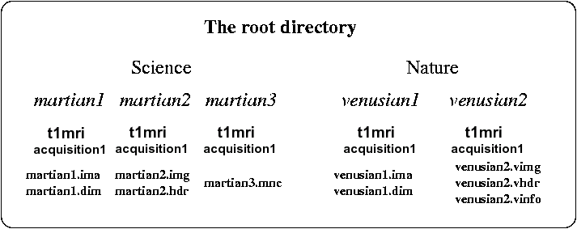

- The first thing to be read before using BrainVISA
Hello,
you get in touch with brainVISA with some apprehension (you already have some experience of image processing tools stemming from the research field...or your first encounter with the Unix world is not so old...), we are aware of that situation... it is not so bad...
This tool has been first dreamt, then developed, to reduce the number of traumatisms caused by image analysis to some neuroscientists. This tool has also been designed to support the methodologists, which are interested in neuroscientist's well-being. It should be easy for them, indeed, to include their own treatments into brainVISA's framework.
Hence, BrainVISA aims at making easier interactions between the two communities. It has to be viewed as a factory dedicated to the processing of brain images (and maybe some other kinds of images). It provides methodologists with a simple language allowing them to build long chains of elementary treatments (often called pipelines in the brain mapping community, or assembly lines in BrainVISA framework). These pipelines can be made up of building blocks stemming from different laboratories. Image format conversion, and data compression/decompression, are taken transparently in charge by BrainVISA without additional work for the pipeline designer. Moreover, the localization of the different temporary results is dealed with by the factory.
Brainvisa offers a small database manager which allows the user to iterate an assembly line on a set of brains. The factory gives automatically access to the visualization tool Anatomist, which is used to check the results or to simply compare different brains.
BrainVISA aims at being an open framework:For all these reasons, we hope that BrainVISA will be chosen by a critical mass of laboratories in order to father a little community that may make it live further.
- Source files are open;
- No image analysis approach is imposed: any laboratory may add its tools into the framework, and finally use its own assembly lines;
- No image format is imposed: as soon as some conversion building blocks are provided to BrainVISA, a user can ask for this data format when using any assembly line;
- Almost no data organization is imposed: the arborescence can be adapted to any laboratory via a local configuration, keeping compatibility with the assembly lines provided by other laboratories.
- The distribution of the command line sources is not mandatory, because BrainVISA relies on calls to binary versions from a shell. Of course, it means laboratories have to provide architecture dependent binary versions, or ask BrainVISA's users to compile locally the command lines, when sources are open.
- No heavy learning is required to design new assembly lines. Indeed, although the pipelines are written in python, a sophisticated interpreted language, most of the assembly lines distributed by the SHFJ have been written from examples by a python's neophyte (who could not even write a loop...). Furthermore, the fact that python is interpreted means that compilation issues do not exist for standard pipeline developpers. Hence, writing a BrainVISA's pipeline is similar to writing a script, when a lot of similar scripts have already been written.
- The framework is free...but we have nothing against encouragement or even donations.
The standard version of Brainvisa leads in fact to a constraint on the data organization. Data have to be imported in BrainVISA through importation processes. The user gives some information about the data and BrainVISA add it to its database. Data files are stored in a directory specified in the user configuration. Subdirectories and filenames are created by BrainVISA according to a hierarchy. With the default hierarchy provided in BrainVISA, subjects are gathered into several protocols. In each protocol's directory, a directory is created for each subject. In this directory, the raw T1-weighted MR scan are put in a subdirectory called "t1mri" in a directory which represents the acquisition session. The subject's directory and the anatomical scan have the same name (forgetting the image format extensions).
An example:

For statring to use BrainVISA, it is recommended to read the tutorial.
Have a nice trip...